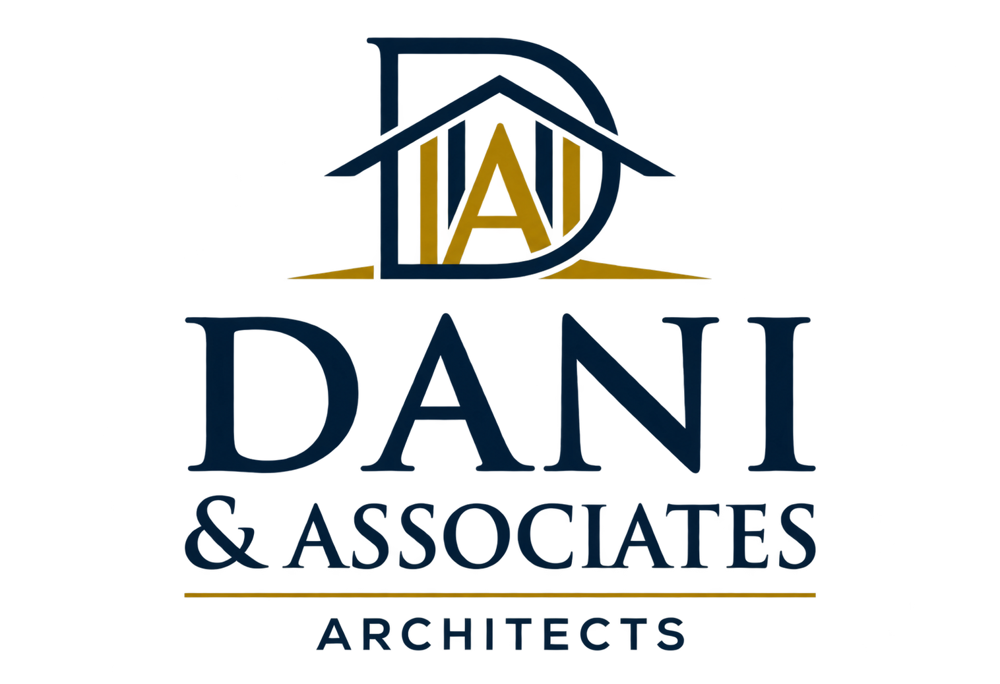

Residential architecture
Homes shaped around everyday life, natural light and a lasting sense of belonging.

Four decades of experience. A personal approach. Architecture that brings your vision to life, from the first conversation to the final detail.
Explore our expertise ↗At Dani & Associates, every project begins with people — how they live, what they need, and what they hope to build. With over 40 years of architectural experience, our practice brings perspective and care to each conversation.
Based in Nashik, our focus spans homes, land planning and petrol station projects, with attention to the approvals and coordination that help a vision move forward.
Four decades of perspective.
A personal commitment to every project.
A registered architect for over four decades, Ar. Dani began independent practice in 1984 and has since designed projects and coordinated approvals across residential, commercial, industrial and retail-fuel developments.
His approach combines a sensitivity to how a home or workplace is actually lived and worked in with a deep familiarity with municipal and statutory procedures.
A practice shaped by experience, evolving expertise and lasting client relationships.
Ar. Dani establishes the practice after registering with the Council of Architecture.
First large petrol pump approval assignment; the specialisation begins.
The firm crosses 100 delivered residential and commercial projects.
A dedicated regulatory desk is set up for NA land conversion and municipal liaison.
Four decades of continuous practice, with a second generation of clients returning.
A thoughtful approach to design and the practical steps that shape every project.
Homes shaped around everyday life, natural light and a lasting sense of belonging.
Thoughtful planning for NA plots, balancing site potential with practical requirements.
Purposeful layouts that consider access, circulation and operational needs.
Support with drawings, documentation and coordination through the approval process.
A visual moodboard for our new website. These are illustrative images, not completed projects by the firm.


Start with your aspirations, the site and the realities of your project.
Develop a considered direction through plans, materials and meaningful conversations.
Bring clarity to drawings, documentation and the next steps toward building.
Share a few details about your project and the guidance you need.